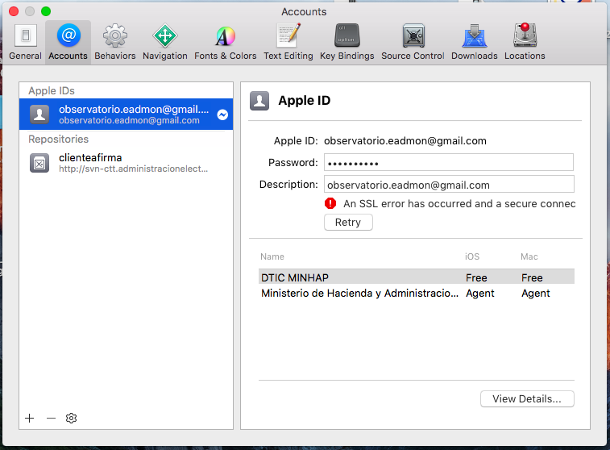
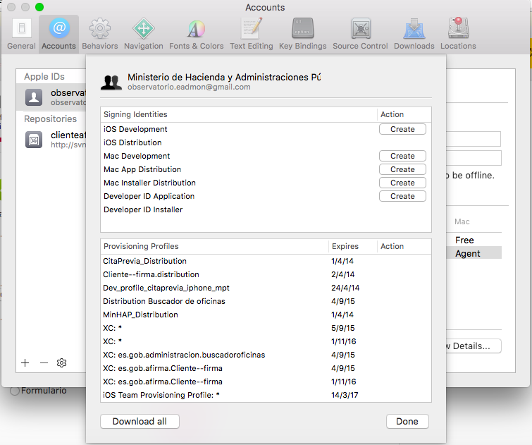
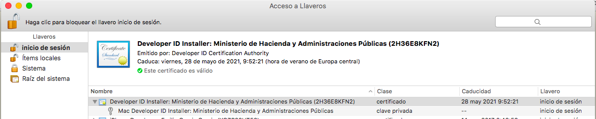
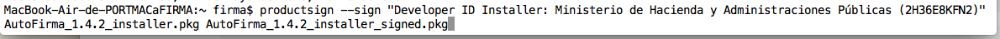

Las aplicaciones OS X (.app) pueden ir firmadas, al igual que lo pueden ir sus instaladores (.pkg). Sin embargo, el proceso de firma de AutoFirma, debido a su naturaleza de aplicación Java y su mecanismo de instalación presenta varias particularidades.
El proceso de empaquetado y firma de AutoFirma para OS X, requiere:
-
Firma de los archivos JAR “AutoFirma.jar” y “AutoFirmaConfigurador.jar”.
-
Empaquetado de los JAR firmados en una aplicación (.app).
-
Empaquetado de la aplicación (.app) en un paquete instalador (.pkg).
-
Firma del paquete instalador (.pkg)
A continuación se describen los distintos procesos de firma involucrados (incluido el proceso de firma del .app que NO se debe llevar a cabo).
Firma de los JAR de AutoFirma
El proceso de firma de firma de los JAR de AutoFirma OS X es el mismo que en el resto de sistemas operativos. Se deberán firmar los ficheros “AutoFirma.jar” y “AutoFirmaConfigurator.jar”.
Se puede revisar la documentación del comando de firma en el siguiente enlace:
http://docs.oracle.com/javase/6/docs/technotes/tools/windows/jarsigner.html
Firma de la APP
Aunque las aplicaciones OS X pueden ir firmadas, no se debe firmar la aplicación AutoFirma para OS X.
Las aplicaciones OS X (.app) consisten en un directorio con nombre terminado en “.app”, lo que hace que el sistema de ventanas lo presente como un fichero. Este directorio dispone de una estructura de ficheros determinada y puede ser firmado. Sin embargo, durante el proceso de instalación de AutoFirma es necesario que se creen nuevos ficheros dentro del directorio .app lo que hace que las firmas sobre este directorio (realizadas antes del empaquetado en el instalador) aparezcan corruptas. Por este motivo, no se firmará el .app en OS X.
Firma del PKG
Para firmar el fichero .pkg será necesario disponer de un equipo OS X y un certificado de desarrollador expedido por Apple válido para la distribución de aplicaciones OS X. Para comprobar que el certificado sea válido, hay que abrir Xcode -> Preferencias -> Cuentas. Seleccionar el ID de la cuenta de desarrollador en el panel de la izquierda, y el nombre del perfil en el panel de la derecha. Una vez seleccionados pulsar el botón inferior “Ver detalles…”
<
En el panel de identidades de firma debe estar creada la opción “Developer ID installer”, en caso de no estar creado, pulsar el botón de la derecha “Crear”, y se importará automáticamente el certificado en el llavero.<
El certificado debe estar importado en el llavero como se muestra a continuación. (consulte con Apple para más información).
Para firmar hay que ejecutar el siguiente comando (el nombre del instalador firmado se puede modificar):
productsign –sign <Nombre certificado> <original.pkg> <firmado.pkg>
-
<Nombre certificado> Nombre del certificado tal como aparece en el llavero de OS X (podemos observarlo en la siguiente imagen).
-
<<original.pkg> Nombre del fichero .pkg que queremos firmar.
-
<firmado.pkg> Nombre del .pkg firmado (No tiene por qué ser el mismo nombre que el original).
Ejemplo:
productsign –sign “Developer ID installer: Ministerio de Hacienda y Administraciones Públicas (2H36E8KFN2)” ./Desktop/test/”Cliente @firma para OS X.pkg” AutoFirma_1.4.2_installer_signed.pkg
<
Si todo ha ocurrido sin problemas se mostrarán los siguientes mensajes:
productsign: adding certificate “Apple Application Integration Certification Authority”
productsign: adding certificate “Apple Root CA”
productsign: Wrote signed_product archive to AutoFirma_1.4.2_installer_signed.pkg
Para una información más detallada sobre el comando productsign y sus parámetros consultar la ayuda de Apple: